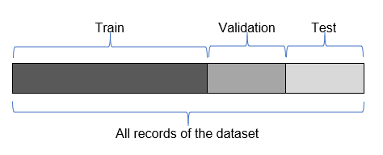
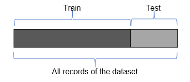

26 Data Split: Train, Test and Validation sets
You need this packages for code execution:
26.1 What’s Train, Validation, Test datasets
Before model fitting and some stages of features engeniering we shoudl split out dataset on 2 or 3 parts:
The model sees and learns from this data.
The validation set is used to evaluate a given model, but this is for frequent evaluation. We, as machine learning engineers, use this data to fine-tune the model hyperparameters. Hence the model occasionally sees this data, but never does it “Learn” from this. We use the validation set results, and update higher level hyperparameters. So the validation set affects a model, but only indirectly. The validation set is also known as the Dev set or the Development set. This makes sense since this dataset helps during the “development” stage of the model.
The Test dataset provides the gold standard used to evaluate the model. It is only used once a model is completely trained(using the train and validation sets). The test set is generally what is used to evaluate competing models (For example on many Kaggle competitions, the validation set is released initially along with the training set and the actual test set is only released when the competition is about to close, and it is the result of the the model on the Test set that decides the winner). Many a times the validation set is used as the test set, but it is not good practice. The test set is generally well curated. It contains carefully sampled data that spans the various classes that the model would face, when used in the real world.

You can also find papers with splitting only for train/test. In this case test means validation.

26.2 Splitting data in R
Lets describe some conditions before start studiyng splitting data functions in R:
Short dataset description:
| X | customerID | gender | SeniorCitizen | Partner | Dependents | tenure | PhoneService | MultipleLines | InternetService | ⋯ | DeviceProtection | TechSupport | StreamingTV | StreamingMovies | Contract | PaperlessBilling | PaymentMethod | MonthlyCharges | TotalCharges | Churn | |
|---|---|---|---|---|---|---|---|---|---|---|---|---|---|---|---|---|---|---|---|---|---|
| <int> | <chr> | <chr> | <int> | <chr> | <chr> | <int> | <chr> | <chr> | <chr> | ⋯ | <chr> | <chr> | <chr> | <chr> | <chr> | <chr> | <chr> | <chr> | <dbl> | <chr> | |
| 1 | 1869 | 7010-BRBUU | Male | 0 | Yes | Yes | 72 | Yes | Yes | No | ⋯ | No internet service | No internet service | No internet service | No internet service | Two year | No | Credit card (automatic) | 24.1 | 1734.65 | No |
| 2 | 4528 | 9688-YGXVR | Female | 0 | No | No | 44 | Yes | No | Fiber optic | ⋯ | Yes | No | Yes | No | Month-to-month | Yes | Credit card (automatic) | 88.15 | 3973.20 | No |
| 3 | 6344 | 9286-DOJGF | Female | 1 | Yes | No | 38 | Yes | Yes | Fiber optic | ⋯ | No | No | No | No | Month-to-month | Yes | Bank transfer (automatic) | 74.95 | 2869.85 | Yes |
| 4 | 6739 | 6994-KERXL | Male | 0 | No | No | 4 | Yes | No | DSL | ⋯ | No | No | No | Yes | Month-to-month | Yes | Electronic check | 55.9 | 238.50 | No |
| 5 | 432 | 2181-UAESM | Male | 0 | No | No | 2 | Yes | No | DSL | ⋯ | Yes | No | No | No | Month-to-month | No | Electronic check | 53.45 | 119.50 | No |
| 6 | 2215 | 4312-GVYNH | Female | 0 | Yes | No | 70 | No | No phone service | DSL | ⋯ | Yes | Yes | No | Yes | Two year | Yes | Bank transfer (automatic) | 49.85 | 3370.20 | No |
Lets check the proportion of column Churn == Yes and Churn == No in dataset with CrossTable() function from gmodels package.
Cell Contents
|-------------------------|
| N |
| N / Table Total |
|-------------------------|
Total Observations in Table: 5986
| No | Yes |
|-----------|-----------|
| 4399 | 1587 |
| 0.735 | 0.265 |
|-----------|-----------|
You can also use CrossTable() to check cross proportions by other fields. Lets check crosstable for TechSupport and Churn:
Cell Contents
|-------------------------|
| N |
| Chi-square contribution |
| N / Row Total |
| N / Col Total |
| N / Table Total |
|-------------------------|
Total Observations in Table: 5986
| telecom_users$TechSupport
telecom_users$Churn | No | No internet service | Yes | Row Total |
--------------------|---------------------|---------------------|---------------------|---------------------|
No | 1738 | 1192 | 1469 | 4399 |
| 87.892 | 62.377 | 29.512 | |
| 0.395 | 0.271 | 0.334 | 0.735 |
| 0.587 | 0.923 | 0.847 | |
| 0.290 | 0.199 | 0.245 | |
--------------------|---------------------|---------------------|---------------------|---------------------|
Yes | 1222 | 99 | 266 | 1587 |
| 243.627 | 172.904 | 81.805 | |
| 0.770 | 0.062 | 0.168 | 0.265 |
| 0.413 | 0.077 | 0.153 | |
| 0.204 | 0.017 | 0.044 | |
--------------------|---------------------|---------------------|---------------------|---------------------|
Column Total | 2960 | 1291 | 1735 | 5986 |
| 0.494 | 0.216 | 0.290 | |
--------------------|---------------------|---------------------|---------------------|---------------------|
You can see that most part of Churn 1222 of 1587
Next, we will check 6 possible ways to split data for train/test sets.
26.2.1 Split with sample()
sample_size = round(nrow(telecom_users)*.70) # setting what is 70%
print(paste0("Size: ", sample_size))
index <- sample(nrow(telecom_users), size = sample_size)
train <- telecom_users[index, ] # index is numbers of selected rows from dataset
test <-telecom_users[-index, ] # -index select only rows not in index[1] "Size: 4190"
Cell Contents
|-------------------------|
| N |
| N / Table Total |
|-------------------------|
Total Observations in Table: 4190
| No | Yes |
|-----------|-----------|
| 3074 | 1116 |
| 0.734 | 0.266 |
|-----------|-----------|
Cell Contents
|-------------------------|
| N |
| N / Table Total |
|-------------------------|
Total Observations in Table: 1796
| No | Yes |
|-----------|-----------|
| 1325 | 471 |
| 0.738 | 0.262 |
|-----------|-----------|
Its 0.260 for train and 0.276 for test. Diffrence is 1,6%, so, its close.
26.2.2 Split with sample_frac from dplyr
library(dplyr)
set.seed(2023)
# Using the above function to create 70 - 30 slipt into test and train
tu <- telecom_users %>% mutate(Id = row_number())
train <- tu %>% sample_frac(.70)
test <- tu[-train$Id, ]
Attaching package: 'dplyr'
The following objects are masked from 'package:stats':
filter, lag
The following objects are masked from 'package:base':
intersect, setdiff, setequal, union
Cell Contents
|-------------------------|
| N |
| N / Table Total |
|-------------------------|
Total Observations in Table: 4190
| No | Yes |
|-----------|-----------|
| 3099 | 1091 |
| 0.740 | 0.260 |
|-----------|-----------|
Cell Contents
|-------------------------|
| N |
| N / Table Total |
|-------------------------|
Total Observations in Table: 1796
| No | Yes |
|-----------|-----------|
| 1300 | 496 |
| 0.724 | 0.276 |
|-----------|-----------|
sample_n made other proportion of Churn == Yes/No and difference just 0.7%.
26.2.3 Split with createDataPartition() from caret
Updating HTML index of packages in '.Library'
Making 'packages.html' ...
done
library(caret)
set.seed(2023)
index = createDataPartition(telecom_users$Churn, p = 0.70, list = FALSE)
train = telecom_users[index, ]
test = telecom_users[-index, ]Loading required package: ggplot2
Loading required package: lattice
Cell Contents
|-------------------------|
| N |
| N / Table Total |
|-------------------------|
Total Observations in Table: 4191
| No | Yes |
|-----------|-----------|
| 3080 | 1111 |
| 0.735 | 0.265 |
|-----------|-----------|
Cell Contents
|-------------------------|
| N |
| N / Table Total |
|-------------------------|
Total Observations in Table: 1795
| No | Yes |
|-----------|-----------|
| 1319 | 476 |
| 0.735 | 0.265 |
|-----------|-----------|
Ckeck the proportion of target variable. Caret trying to make the same split for both train and test. This is one of the best split methods in R.
26.2.4 Split with sample.split from caTools
Cell Contents
|-------------------------|
| N |
| N / Table Total |
|-------------------------|
Total Observations in Table: 4190
| No | Yes |
|-----------|-----------|
| 3079 | 1111 |
| 0.735 | 0.265 |
|-----------|-----------|
Cell Contents
|-------------------------|
| N |
| N / Table Total |
|-------------------------|
Total Observations in Table: 1796
| No | Yes |
|-----------|-----------|
| 1320 | 476 |
| 0.735 | 0.265 |
|-----------|-----------|
26.3 Splitting for n-folds
# read data again
library(caret)
telecom_users <- read.csv("../../data/telecom_users.csv")
nrow(telecom_users)
head(telecom_users)| X | customerID | gender | SeniorCitizen | Partner | Dependents | tenure | PhoneService | MultipleLines | InternetService | ... | DeviceProtection | TechSupport | StreamingTV | StreamingMovies | Contract | PaperlessBilling | PaymentMethod | MonthlyCharges | TotalCharges | Churn | |
|---|---|---|---|---|---|---|---|---|---|---|---|---|---|---|---|---|---|---|---|---|---|
| <int> | <chr> | <chr> | <int> | <chr> | <chr> | <int> | <chr> | <chr> | <chr> | ... | <chr> | <chr> | <chr> | <chr> | <chr> | <chr> | <chr> | <chr> | <dbl> | <chr> | |
| 1 | 1869 | 7010-BRBUU | Male | 0 | Yes | Yes | 72 | Yes | Yes | No | ... | No internet service | No internet service | No internet service | No internet service | Two year | No | Credit card (automatic) | 24.1 | 1734.65 | No |
| 2 | 4528 | 9688-YGXVR | Female | 0 | No | No | 44 | Yes | No | Fiber optic | ... | Yes | No | Yes | No | Month-to-month | Yes | Credit card (automatic) | 88.15 | 3973.20 | No |
| 3 | 6344 | 9286-DOJGF | Female | 1 | Yes | No | 38 | Yes | Yes | Fiber optic | ... | No | No | No | No | Month-to-month | Yes | Bank transfer (automatic) | 74.95 | 2869.85 | Yes |
| 4 | 6739 | 6994-KERXL | Male | 0 | No | No | 4 | Yes | No | DSL | ... | No | No | No | Yes | Month-to-month | Yes | Electronic check | 55.9 | 238.50 | No |
| 5 | 432 | 2181-UAESM | Male | 0 | No | No | 2 | Yes | No | DSL | ... | Yes | No | No | No | Month-to-month | No | Electronic check | 53.45 | 119.50 | No |
| 6 | 2215 | 4312-GVYNH | Female | 0 | Yes | No | 70 | No | No phone service | DSL | ... | Yes | Yes | No | Yes | Two year | Yes | Bank transfer (automatic) | 49.85 | 3370.20 | No |
- $Fold01
-
- 1
- 10
- $Fold02
-
- 3
- 4
- 15
- $Fold03
-
- 2
- 17
- $Fold04
- 8
- $Fold05
-
- 16
- 22
- $Fold06
-
- 9
- 18
- $Fold07
-
- 19
- 20
- $Fold08
-
- 5
- 12
- 14
- $Fold09
- 11
- $Fold10
-
- 6
- 7
- 13
- 21
26.4 References
- About Train, Validation and Test Sets in Machine Learning by Tarang Shah. Url: https://towardsdatascience.com/train-validation-and-test-sets-72cb40cba9e7